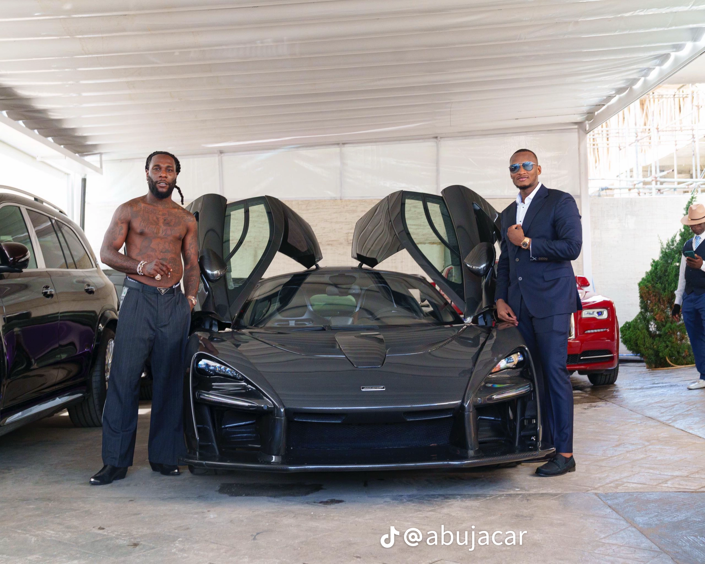

I'm IMONG MICHAEL IMOKE from cross river, I am someone who is ambitious, highly imaginative, and very future-oriented. Rather than just learning technology, i'm focused on building products that solve real problems. A recurring theme is that you think on a large scale—you often want your projects to meet international standards instead of being limited to a local audience.
I'm currently developing multiple software products, particularly Nimbus AI and Campus Ride, and you pay close attention to both the technical details and the user experience. You also tend to think like an entrepreneur, asking about pricing models, monetization, scalability, and investor positioning in addition to software development.
Academically and professionally, I have built a foundation in computer science and am continuing to improve my skills through web development training. You seem to enjoy learning by building real-world projects rather than only studying theory.

MY SKILLS
- Building websites, apps, and software products This is my strongest interest.
i have spent a lot of time designing and improving projects like Nimbus AI and Campus Ride.
- Cooking
- Running
- Problem-solving and deep thinking
MY TIMELINE ACHIEVEMENTS
- 2024 — Gained Real-World Technical Experience
Completed a 6-month Industrial Training (IT) at Pacific Computers, where you gained practical experience in computer systems and technology.
- 2025 — Earned Your Computer Science Degree
Graduated from Federal Polytechnic Ugep with a Second Class Lower in Computer Science, marking the completion of your academic foundation in software and technology.
- 2026 — Advanced Your Software Development Skills
Enrolled in Aptech Computer Education to specialize in Web Development, building your skills in modern web technologies while working on real software projects.
- 2026 — Started Building My Own Technology Products
Transitioned from learning to creating by developing products such as:
Nimbus AI — an AI-powered business intelligence platform.
Nimbus Digital Earth — a global weather and disaster intelligence system.
Campus Ride — a transportation platform designed for students in Nigerian universities and polytechnics.
QUOTE I LIKE
"The people who are crazy enough to think they can change the world are the ones who do." — Steve Jobs
"Success is no accident. It is hard work, perseverance, learning, studying, sacrifice, and most of all, love of what you are doing."— Pele